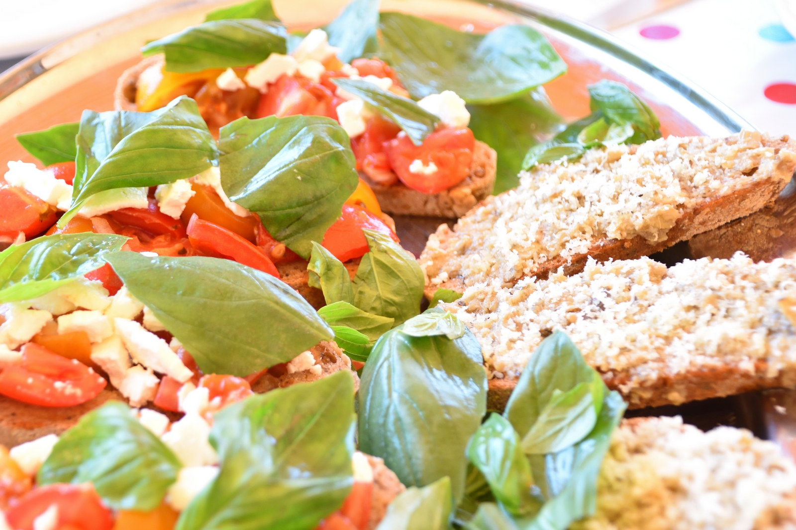

Nach einem entspannten Vormittag am Pool kam mittags Bruschetta mit zweierlei Belägen auf den Tisch: Eine Häfte mit marinierten Tomaten, Zwiebeln und Feta und die andere Hälfte mit Artischocken. Dazu gab es ein dunkles Bauernbrot.

Nachmittags fuhren wir wie in jedem Jahr bei den Winzern vorbei um unsere Weinvorräte aufzustocken. Diesesmal haben wir auch bei der Azienda Russo den Winzer angetroffen - was im letzten Jahr nicht der Fall war, und womit wir auch nicht mehr gerechnet hatten, denn ich hatte vormittags vergeblich versucht jemanden zu errerichen. Es wäre allerdings schade gewesen, denn wir wären nur ungerne ohne seinen Ceppitaio nach Hause gefahren.
Insgesamt waren wir bei folgenden Weingütern:
Der Abschluss bei Guiseppe war natürlich ein absolutes Muss. Es gab bei einem Glas Per Te (Ansonico) viel zu erzählen, und außerdem haben wir uns für den 31. zum Abendmenü angekündigt.
An diesem Abend haben wir allerdings selbst gekocht und zwar ein sehr leckeres Risotto mit Crema Tartufata Bianca.
created with
Website Builder Software .